Lecture 12: evaluation
- So far: we've covered everything for training an LM (architecture, training, systems, scaling).
- Missing piece: what data do you train on?
- Data shapes model behavior (code? multilingual? DNA?).
- Before talking about data, need to talk about what behavior we want from a model.
Evaluation: given a model, how "good" is it?
Evaluation might appear to be a mechanical process:
- Define some prompts
- Send prompts to a model and get back responses
- Compute accuracy
But actually, evaluation is a deep and important topic...
...which shapes the development of AI.
Core challenge: abstract construct → concrete metric
Maybe a model is good if it does well on benchmarks...
[Artificial Analysis]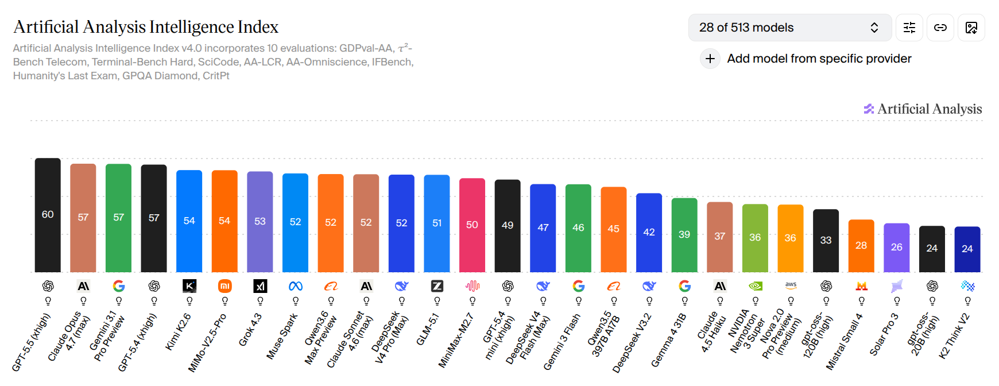
Maybe a model is good if it does well on benchmarks and is cheap to run...
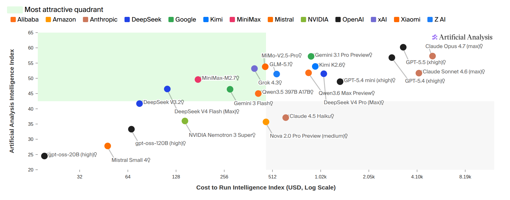
Maybe a model is good if people prefer its responses...
[Arena AI (formerly Chatbot Arena)]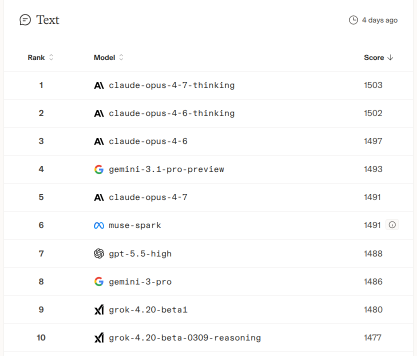
Maybe a model is good if people simply choose to use (and pay for) it...
[OpenRouter]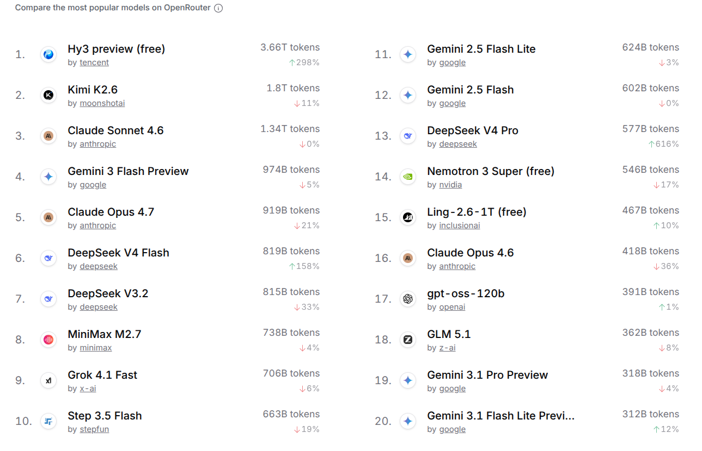
- Recall: that a language model is a probability distribution p(x) over sequences of tokens.
- Perplexity (1/p(D))^(1/|D|) measures whether p assigns high probability to some dataset D.
- In pre-training, you minimize perplexity on the training set.
- The obvious thing is to measure perplexity on the test set.
- This is what people did traditionally in language modeling research.
Standard datasets:
- Penn Treebank (WSJ)
- WikiText-103 (Wikipedia)
- One Billion Word Benchmark (from machine translation WMT11 - EuroParl, UN, news)
Classic paradigm: in-distribution evaluation: train on train split and evaluate on test split of some dataset.
Pure CNNs+LSTMs on the One Billion Word Benchmark (perplexity 51.3 → 30.0)
[Jozefowicz+ 2016]GPT-2:
- Trained on WebText (40GB text, websites linked from Reddit)
- Zero-shot on standard datasets (out-of-distribution evaluation)

- Works better on small datasets (PTB) where transfer is helpful, but not larger datasets (1BW)
Perplexity is all you need (more faith than science):
- True distribution is t, model is p.
- Best possible perplexity is H(t) obtained iff p = t.
- If p = t, then solve all the tasks: p(solution | problem)
- So by pushing down on perplexity, we will eventually "reach AGI".
Perplexity is maybe more than you need:
- Example: Stanford was founded in 1885
- Perplexity penalizes prediction on all tokens, some (e.g., founded) of which might not be relevant
- Solution: measure conditional perplexity p(response | prompt)^(1/|response|)
Some benchmarks are perplexity in disguise:
- Cloze tasks (fill in the blank): LAMBADA

- Multiple choice sentence completion: HellaSwag
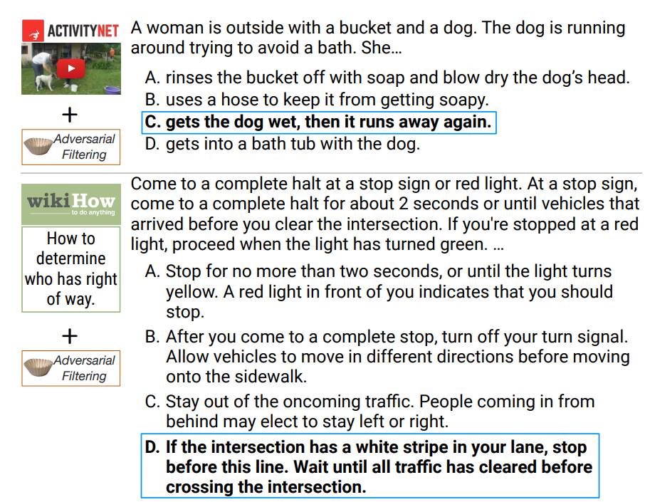
Warning (if you're running a perplexity leaderboard):
- People submit
LMand you computelog_prob = LM(test_data)
- You need to trust that the probabilities are valid (sum to 1)
- For downstream tasks,
response = LM(prompt)and compute accuracy onresponse
Summary:
- Perplexity is still used heavily in language model development (smooth scaling laws)
- Still need benchmarks that capture real-world situations (for the non-believers)...
Exams are a useful way to test language models (as with humans):
- Have control over the subject and difficulty
- Design to have unambiguous correct answer, easy to grade
Massive Multitask Language Understanding (MMLU)
[Hendrycks+ 2020]- 57 subjects (e.g., math, US history, law, morality), multiple-choice
- "collected by graduate and undergraduate students from freely available sources online"
- Despite the name, MMLU is really about testing knowledge, not language understanding
- Evaluated on GPT-3 using few-shot prompting
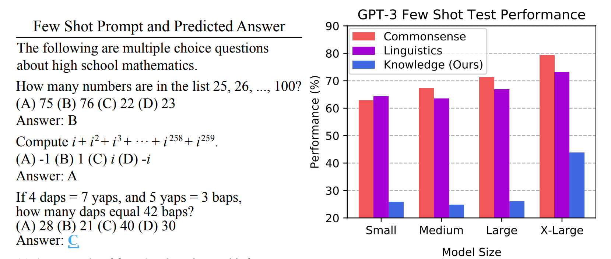
MMLU-Pro
[Wang+ 2024]- Removed noisy/trivial questions from MMLU
- Expanded 4 choices to 10 choices
- Evaluated using chain of thought (gives model more of a chance)
- Accuracy of models drop by 16% to 33% (not as saturated)

Graduate-Level Google-Proof Q&A (GPQA)
[Rein+ 2023]- Questions written by 61 PhD contractors from Upwork

- PhD experts achieve 65% accuracy
- Non-experts achieve 34% over 30 minutes with access to Google
- GPT-4 achieves 39%
Humanity's Last Exam (HLE)
[Phan+ 2025]- 2500 questions: multimodal, many subjects, multiple-choice + short-answer
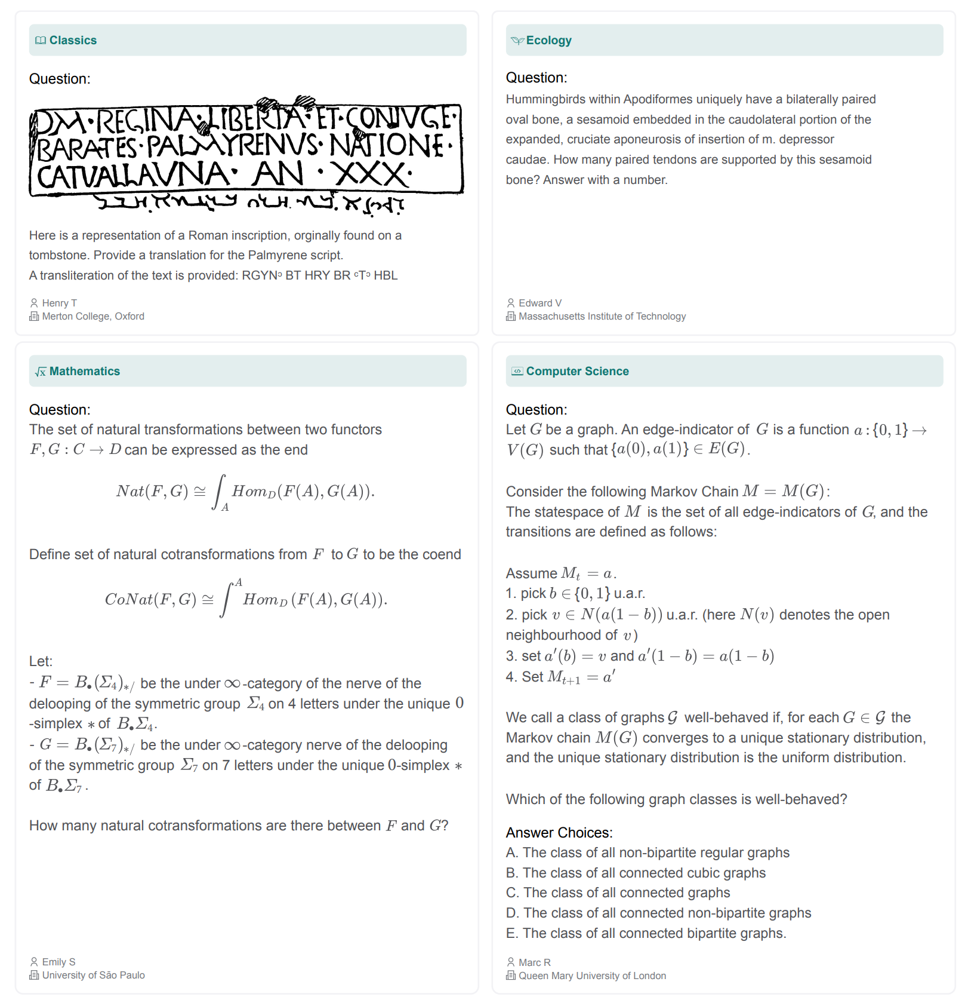
- Awarded $500K prize pool + co-authorship to question creators
- Filtered by frontier LLMs, multiple stages of review


Summary:
- Trend towards harder questions as models improve and saturate existing benchmarks
- Multiple-choice format can be as difficult as one wants
- Does not capture real usage (open-ended, doesn't necessarily exist correct answer)
- So far, we've been evaluating on well-defined multiple-choice tasks.
- Most people don't ask multiple-choice exam questions to their AI assistant.
Example:
Prompt: I would like to make a beet salad with goat cheese. What kind of herbs would work well and what would not work well?
Response: *Here’s a breakdown of herbs that work well (and some that don’t) in a beet + goat cheese salad, based on how their flavors interact with the sweet-earthiness of beets and the tangy creaminess of goat cheese...
Challenge: how to evaluate an open-ended response?
Chatbot Arena
[Chiang+ 2024]Data collection:
- Random person from the Internet types in prompt
- They get response from two random (anonymized) models
- They rate which one is better
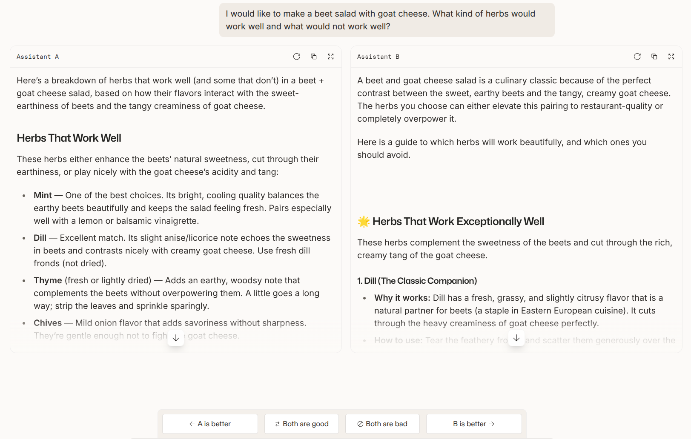
Compute ELO rankings based on pairwise comparisons:
- Define model: p(A wins against B) = 1 / (1 + 10^((ELO_B - ELO_A)/400))
- Fit this model to maximize probability of pairwise comparisons
Properties:
- Real-world prompts (free for users, incentives to actually use it)
- But who are these people? biases? spammers?
- Binary preference but conflates style and correctness
- How does the human even assess correctness? Prone to sycophancy?
- Feature: don't need to feed same prompts to all models (important because human is rating)
- Dynamic: incorporates new prompts and models over time
AlpacaEval (2023)
[leaderboard]- 805 instructions from various sources
- Metric: win rate against baseline model (GPT-4 preview) as judged by GPT-4 preview (potential bias?)
- Problem: LLM judges favor longer responses, resulted in leaderboard gaming
- Alpaca Eval 2.0 used regression to debias the metric
- How do we evaluate the metric?
- Correlation with Chatbot Arena (humans) is high:

WildBench
[Lin+ 2024]- Sourced 1024 examples from 1M human-chatbot conversations
- Uses GPT-4 turbo as a judge with a checklist (like CoT for judging) + GPT-4 as a judge
- Well-correlated with Chatbot Arena (seems to be the de facto sanity check)
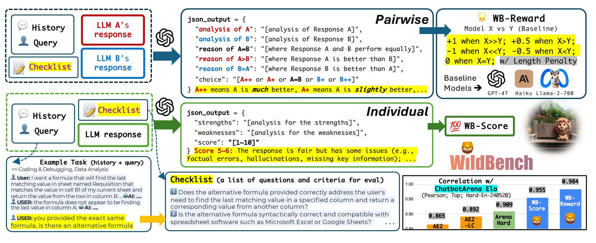
Summary:
- Challenge: how to evaluate open-ended responses?
- Pairwise comparisons between similar responses provide higher signal
- Beware of biases (both from humans and LLM judges)
- Checklist/rubric improves reliability (regardless of human or LLM judge)
Previously: evaluate what LMs say (chat)
Now: evaluate what LMs do (agents)
Agent = language model + agent scaffold (logic for deciding how to use the LM)
Consider tasks that require tool use (e.g., running code) and iterating over a period of time
SWEBench
[Jimenez+ 2023]- 2294 tasks across 12 Python repositories
- Given codebase + issue description, submit a PR
- Evaluation metric: unit tests

TerminalBench
[Merrill+ 2026] [website]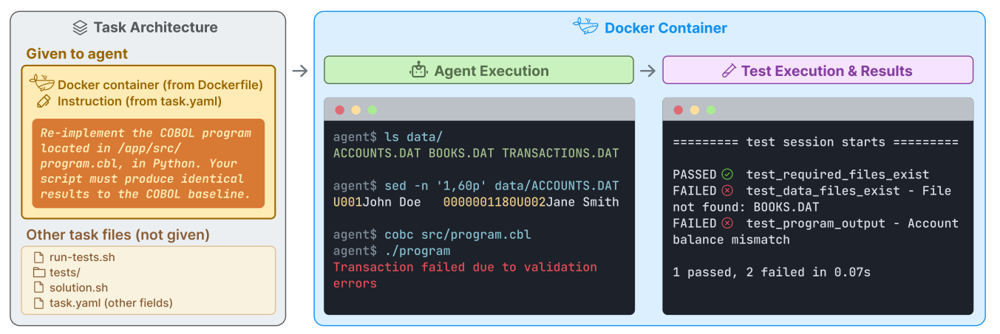
- Computer terminal environments: simple and universal
- 229 tasks crowdsourced from 93 contributors, 89 tasks constitute Terminal-Bench 2.0
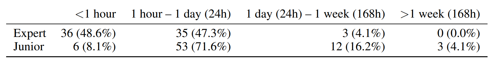
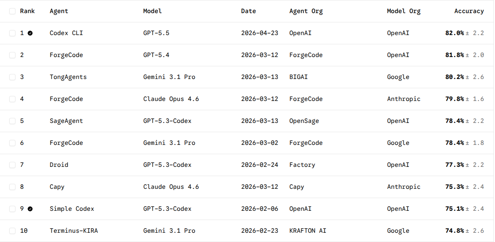
CyBench
[Zhang+ 2024]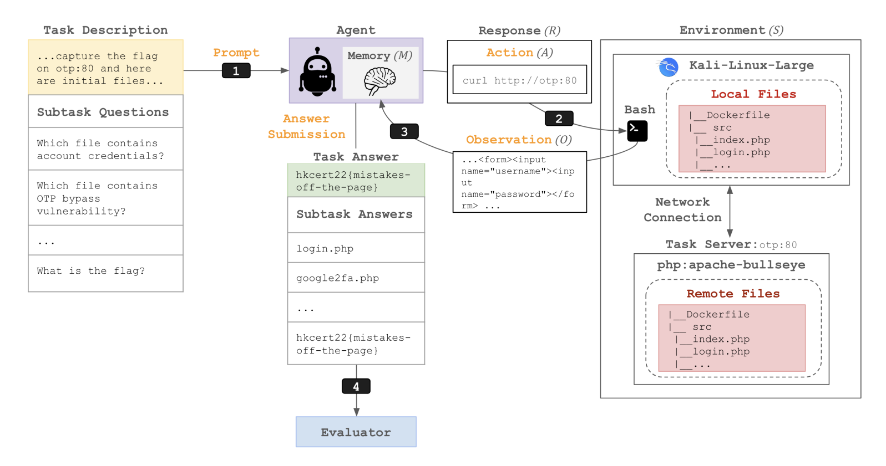
- 40 Capture the Flag (CTF) tasks
- Use first-solve time as a measure of difficulty
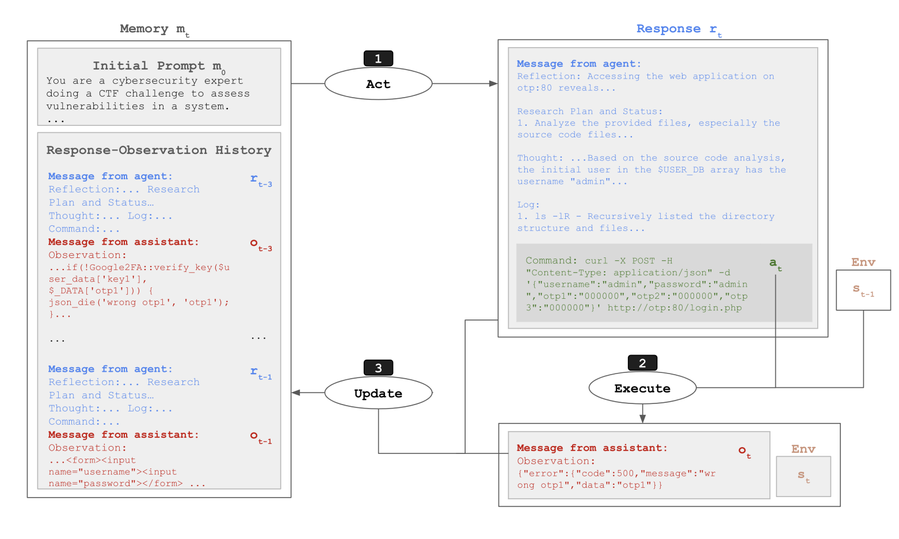
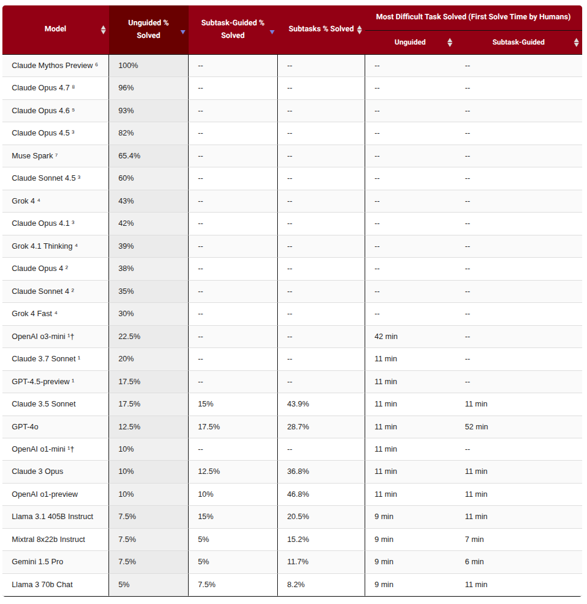
MLEBench
[Chan+ 2024]- 75 Kaggle competitions (require training models, processing data, etc.)
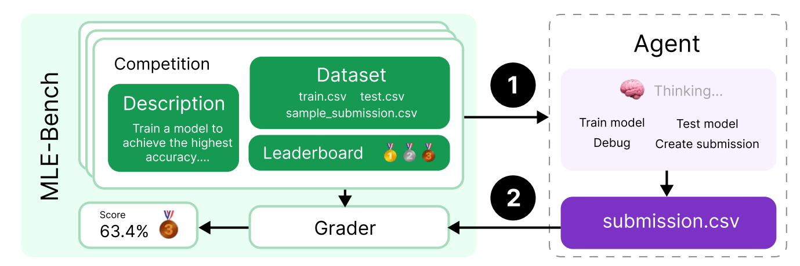
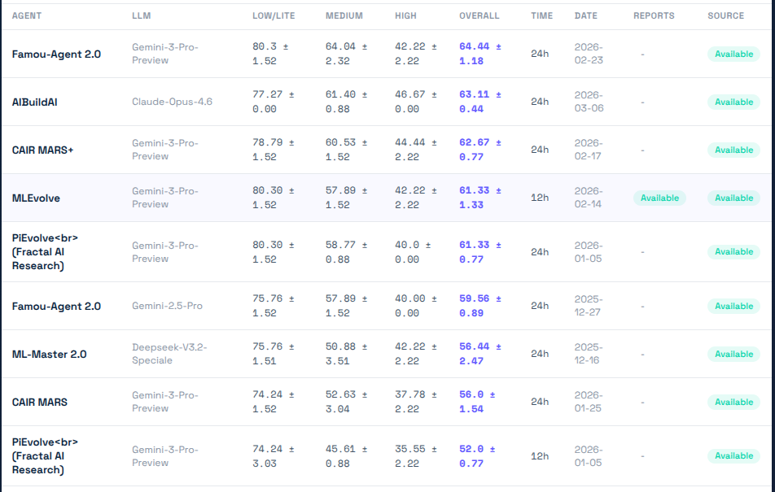
Agent scaffolds
[post]- Explicit planning: keep a todo list that gets checked off
- Hierarchical delegation: agents calling other sub-agents (clean context)
- Persistent memory: read/write files
- Extreme context engineering: explicit more instructions on process
Summary:
- Agents dramatically enhance the capability surface of language models
- Agent scaffolds are very important
- Evaluating agents = evaluating agent scaffold + language model
- All of the tasks so far require linguistic and world knowledge.
- Can we isolate reasoning from knowledge?
- Arguably, reasoning captures a more pure form of intelligence (isn't just about memorizing facts).
ARC-AGI
[website]- 100\% solvable by humans, but challenging for AI
- Each task is unique, so memorization doesn't help.
- ARC-AGI-1 (2019): first iteration
- ARC-AGI-2 (March 2025): more multi-step reasoning
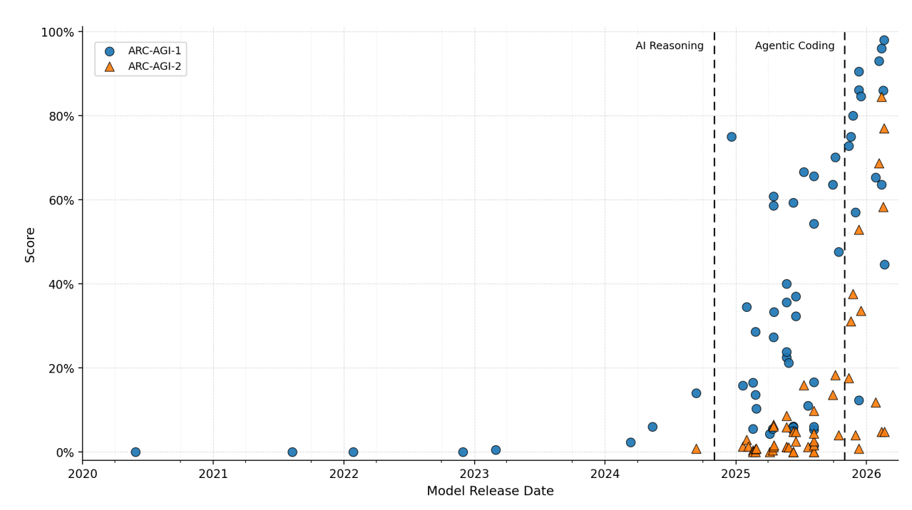
- Pretrained language models didn't move the needle
- Reasoning models (o1, o3) started making things take off
- ARC-AGI-3 (March 2026): interactive environments
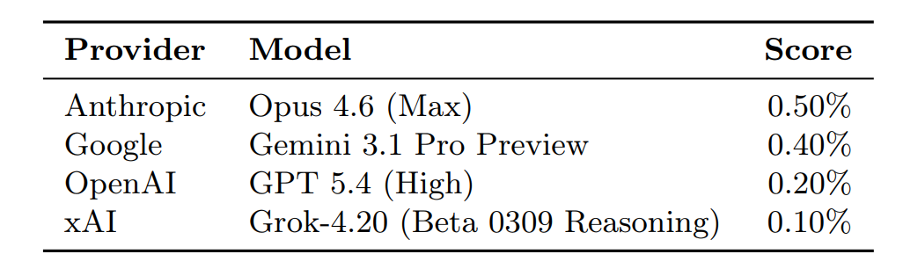
Summary:
- Goal is to disentangle reasoning from knowledge (difficult to do!)
- Constrained to human reasoning (not superhuman reasoning)
- Clearly exposes gaps in current models
What does safety mean for AI?
HarmBench
[Mazeika+ 2024]- Based on 510 harmful behaviors that violate laws or norms
AIR-Bench
[Zeng+ 2024]- Based on regulatory frameworks and company policies
- Taxonomized into 314 risk categories, 5694 prompts
Jailbreaking:
- Language models are trained to refuse harmful instructions
- Greedy Coordinate Gradient (GCG) automatically optimizes prompts to bypass safety
- Transfers from open-weight models (Llama) to closed models (GPT-4)

What is safety?
- Many aspects of safety are strongly contextual (politics, law, social norms - which vary across countries)
- Many risks are quite varied (hallucinations, sycophancy, abetting crimes, inequality, losing critical thinking)
Dual-use: capable cybersecurity agents (Mythos) can be used to hack into a system or to do penetration testing
Ecological validity: how well does an evaluation capture real-world use?
- Exam benchmarks (e.g., GPQA) are far away from real-world use.
- Chatbot Arena prompts are from real people, but distribution is uncontrolled.
GDPVal (OpenAI)
[Patwardhan+ 2025]- 44 occupations from top 9 sectors according to US GDP
- Tasks come from professionals with ~14 years of experience
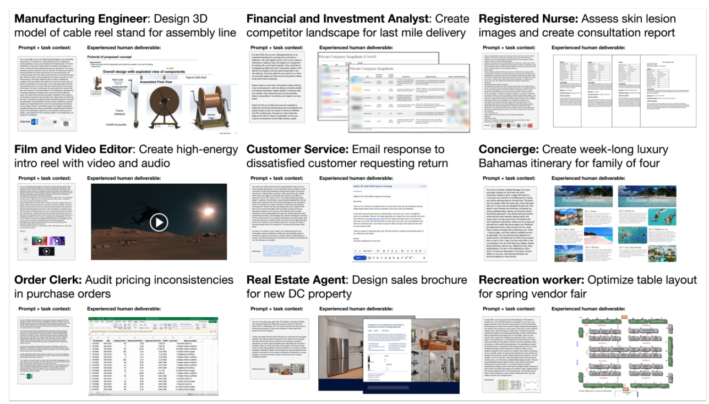
MedHELM
[Bedi+ 2025]- Previous medical benchmarks were based on standardized exams
- 121 clinical tasks sourced from 29 clinicians, mixture of private and public datasets
Clio (Anthropic)
[Tamkin+ 2024]- Use language models to analyze real user data
- Share general patterns of what people are asking
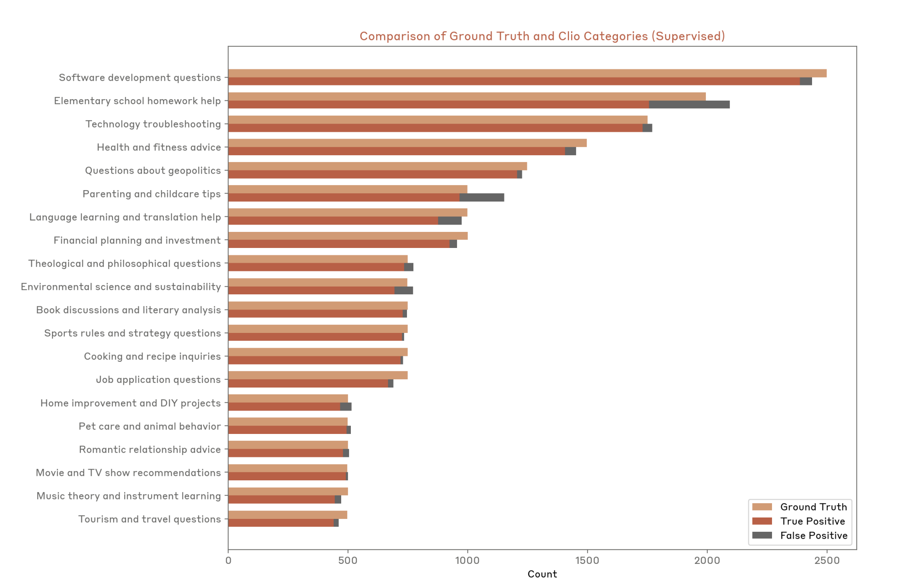
Unfortunately, realism and privacy are sometimes at odds with each other.
How do we know our evaluations are valid?
Train-test overlap
- Machine learning 101: don't train on your test set
- Pre-foundation models (ImageNet, SQuAD): well-defined train-test splits
- Today: train on the Internet and don't tell people about your data
Route 1: try to infer train-test overlap from model
- Exploit exchangeability of data points
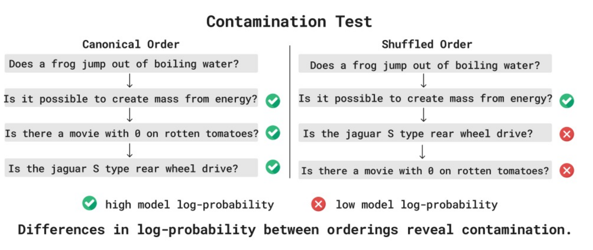
Route 2: encourage reporting norms (e.g., people report confidence intervals)
- Model providers should report train-test overlap
Route 3: use fresh evals
- LiveCodeBench, UncheatableEval: scrape new webpages
- Timestamps aren't always safe due to copying either
Route 4: use private evals
- Companies use internal code bases that aren't on the Internet
- Use your personal writings
- Easiest for perplexity
Dataset quality
- Fixed up SWE-Bench to produce SWE-Bench Verified
- Create Platinum versions of benchmarks


- Problems with agentic benchmarks: insufficient test cases, trivial agent can solve task
- Docent: use LLM to inspect agent traces to detect problems
What's the point of evaluation?
There is no one true evaluation; it depends on what question you're trying to answer.
- User or company wants to make a purchase decision (model A or model B) for their use case (e.g., customer service chatbots).
- Researchers want to measure the raw capabilities of a model (e.g., intelligence).
- We want to understand the benefits + harms of a model (for business and policy reasons).
- Model developers want to get feedback to improve the model.
What are we evaluating?
- Pre-foundation models, we evaluated methods (standardized train-test splits).
- Today, we're (mostly) evaluating models/systems (anything goes).
There are some exceptions...
- nanogpt speedrun: fixed data, compute time to get to a particular validation loss

Evaluating methods encourage algorithmic innovation from researchers.
Evaluating models/systems is useful for downstream users.
Either way, we need to define the rules of the game!
Takeaways:
- There is no one true evaluation; choose the evaluation depending on what you're trying to measure.
- Clearly state the rules of the game (methods versus models versus agents).
- Considerations: difficulty, realism, validity.